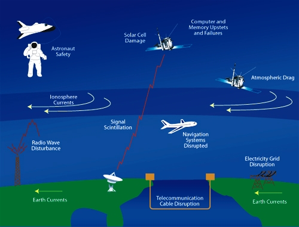

Geomagnetic storms are a solar-induced electromagnetic phenomenon which occurs both in our atmosphere and across the Earth’s surface. The variable flow of charged particles from solar flares through the Earth’s atmosphere, which result in aurorae, are effectively electric currents; associated with these are fluctuating magnetic fields that in turn induce electrical currents across our planet’s surface.
Given that electricity encounters less resistance when it flows through metal, compared to rock or water, ground induced currents tend to flow through our power lines or man-made pipeline networks that criss-cross the landscape.
Magnetic storms are of course not a recent phenomenon, and we have noticed their influence on mankind’s technology for over a century. During a magnetic storm on February 4, 1872, telegraph communications were actually sent without any local power source; magnetic storm induced currents did the work! Damage to pipelines is evident through increased levels of corrosion and significantly reduces the life-spans of pipes in high latitude regions.
The affects of geomagnetic storms on power-grids are much more dramatic. On March 13, 1989, seven days after a strong X-ray flare from our Sun, ground currents from geomagnetic storms brought down Canada’s entire Hydro Quebec power system. The origin of the flare was an impressively large sunspot known as AR 5395, it was 54 times larger than the Earth but yet still covered less than one half of a percent of the solar disc. Transformers which are used to manipulate the current and voltage flows through power-grids are designed to operate with alternating current (AC). Ground induced currents are direct currents (DC) and they caused the transformers in the Hydro Quebec power system to catch on fire and breakdown. While such transformers alone cost millions of dollars, the total estimated cost of this blackout was placed at hundreds of millions of dollars.
The energy dumped into our atmosphere by solar flares results in it heating up slightly and thus expanding. This can, and has, resulted in some satellites experiencing a small but previously insignificant wind drag as they suddenly find themselves in our upper atmosphere. Indeed, the the Hubble Space Telescope requires shuttle boosts to keep placing it back into its optimal orbit.
On October 7 1995, the Intelsat 511 satellite passed through a cloud of high-velocity electrons which (amazingly) resulted in an electrostatic discharge that actually fired the satellites rocket thrusters, resulting in a loss of ‘Earth lock’ from ground tracking stations. Such phantom commands also resulted in the loss of control of the Canadian telecommunication satellites Anik E-1 and Anik E-2 on January 20 and 21, 1994.

Credit: NASA